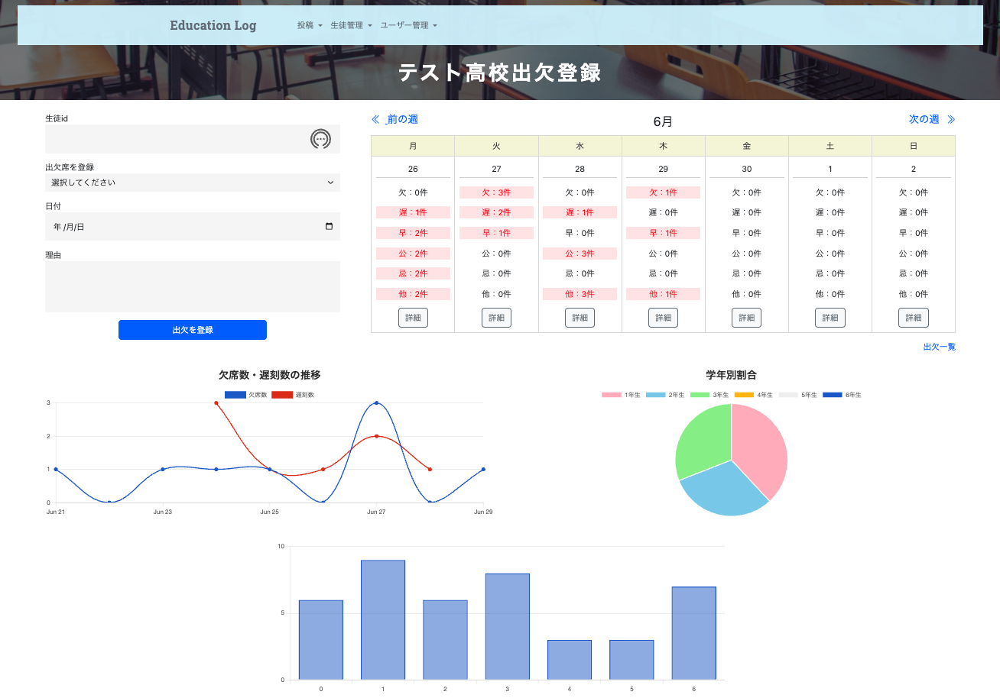
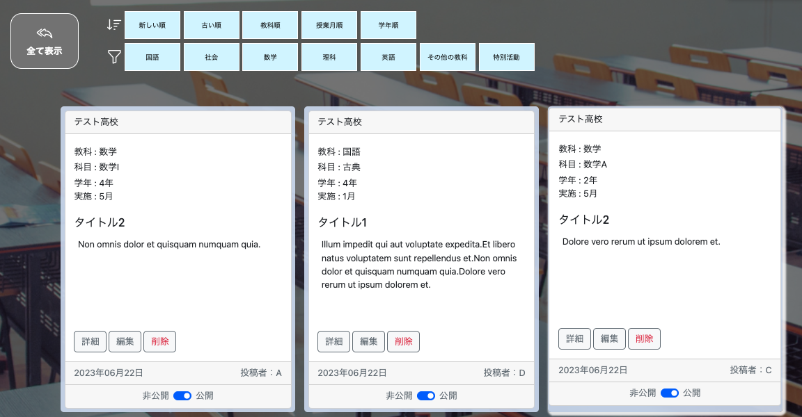

Education Log（授業記録・出欠情報登録アプリ）
開発環境
Ruby / Ruby on Rails / MySQL / GitHub / Visual Studio Code
-
概要
制作時間 100時間 URL https://original-app-37346.onrender.com ID original PASS 37346 -
動作テスト
テスト用アカウント
mail test1@test PASS test11
OUTLINEアプリケーションの概要
オリジナルアプリケーションとして、学校での記録ができるアプリを開発しました。
主な機能は大きく分けて3つで、授業記録の投稿・生徒管理・出欠管理です。
ログインすると授業の記録が表示されます。ヘッダーのリンクから新規投稿ページへアクセスできます。投稿には公開と非公開を切り替えるボタンがあり、公開されている投稿のページはログインしていなくても表示することができます。
生徒情報の登録はエクセルファイルを使用して実施できます。指定されたフォーマットのエクセルファイルをWebページにアップロードするとその内容を読みとって生徒情報一覧が作成されます。
各生徒または学校は出欠情報を登録することができます。出欠登録ページからフォームを記入して登録すると、カレンダーの日付の中に情報が紐づきます。ログインしている場合は詳細ボタンをクリックすることでモーダルが開き詳細を確認することが可能です。
-
開発に至った経緯
前職の経験の中で、授業のノウハウが蓄積されておらず、初任者や転任者の授業準備に大きな負担があると感じていました。
授業の記録を蓄積することで、いつ、どのような授業を実施しているのかが分かり、準備にかける負担が軽減できると考えました。また、その記録を公開することで、他校での取り組みを参照することもできると考えました。
出欠情報の登録ができるようにしたのは、いまだに電話による連絡が多い職場だったためです。アプリから出欠を登録できるようにすることで学校としても生徒としても負担が軽減されます。さらに、登録と同時に件数を把握し、傾向を分析することも可能です。
-
開発で工夫したこと
1つ目が出欠登録ページです。フォームとカレンダーを同じビューに配置することで登録した情報がすぐにカレンダーに反映されるようにしました。また、カレンダーには出欠情報の件数だけを記載し、詳細をモーダルで表示するようにして見やすくしました。
2つ目がBoot Strapを用いてレスポンシブ対応にしたことです。現代の開発にはレスポンシブ対応の視点は欠かせません。しかし、自分で1からCSSを記述すると記述量が多くなり時間もかかり、機能の実装に割く時間が少なくなってしまいます。Boot Strapを導入することでこの課題を解決し、レスポンシブ対応のビューを比較的簡単に実装することができました。
-
今後実装したいと思っていること
1つ目が管理者アカウント・学校アカウント・教員アカウント・生徒アカウントを分けてそれぞれのアカウントで機能に制限をかけることです。セキュリティのことを考えた時にアカウントを分けることが必須になるためです。
2つ目が出欠情報のデータに対応して表示されるグラフの表示を柔軟に変更できるようにすることです。ある特定の期間だけ表示できたり、特定の情報だけを抽出して表示できたりするとさらに便利になると思います。
3つ目が、授業記録の投稿に対するいいね機能です。いいね機能をつけ、いいね数順に並び替えられるようにすることで、参考になる授業を早く見つけることができます。